40 سؤال
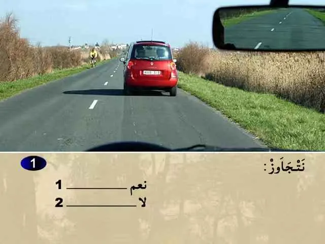
الجواب الصحيح: 2
الخط المتقطع يسمح لي نتجاوز، ولكن كاين موطور جاي ف الاتجاه المعاكس، ما نقدرش نتجاوز دابا.
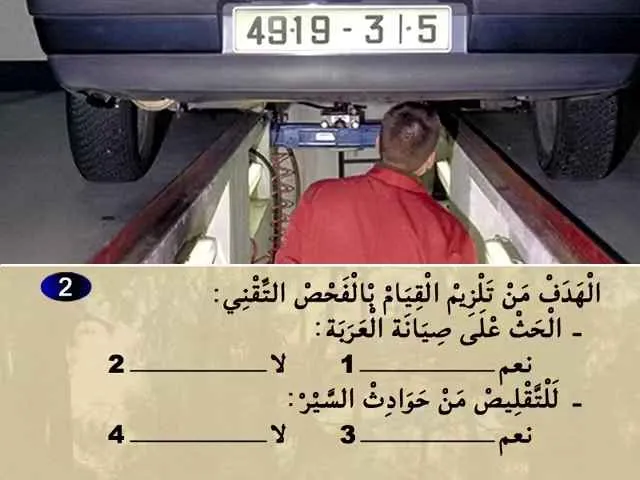
الجواب الصحيح: 1 و 3
الهدف من الفحص التقني هو باش نحافظو على الطموبيلات ف حالة مزيانة، ونقلصو من حوادث السير.
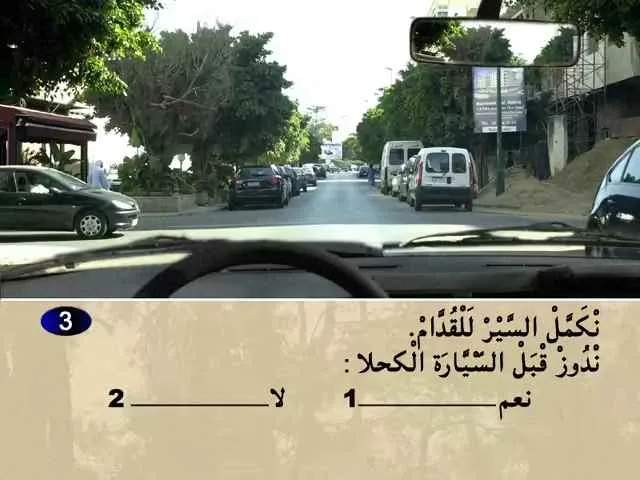
الجواب الصحيح: 1
فملتقيات الطرق، إلا ما كايناش إشارات، الأسبقية ديما للعربات اللي جاية من اليمن. دابا أنا ف اليمن ديال الطموبيلة الكحلة، إذن أنا نمر اللول.
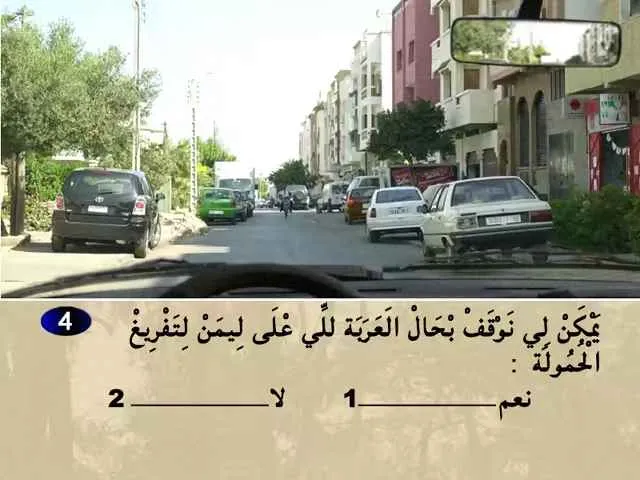
الجواب الصحيح: 2
ما نقدرش نوقف بحال الشاحنة اللي ف اليمن حيت غادي نزيد نعرقل السير.
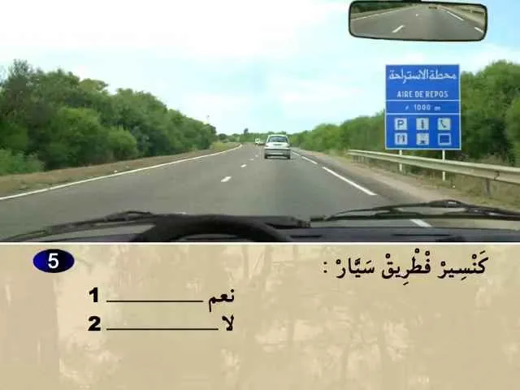
الجواب الصحيح: 1
حنا ف طريق سيار، واضح بالخط المتصل ف أقصى اليسار وبالعلامة الزرقاء اللي كتشير لطريق سيار ومحطة الاستراحة.
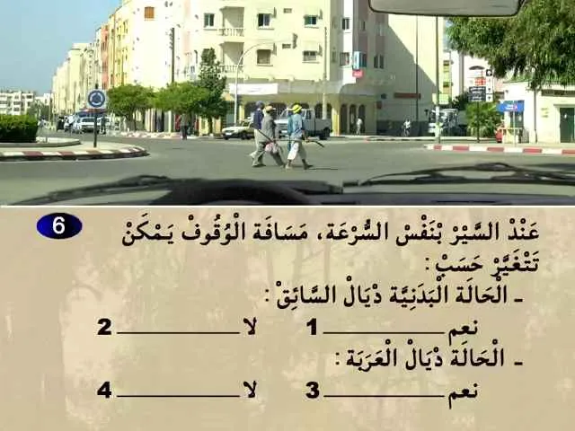
الجواب الصحيح: 1 و 3
الحالة البدنية للسائق وحالة العربة والطريق كيلعبو دور ف مسافة الوقوف.
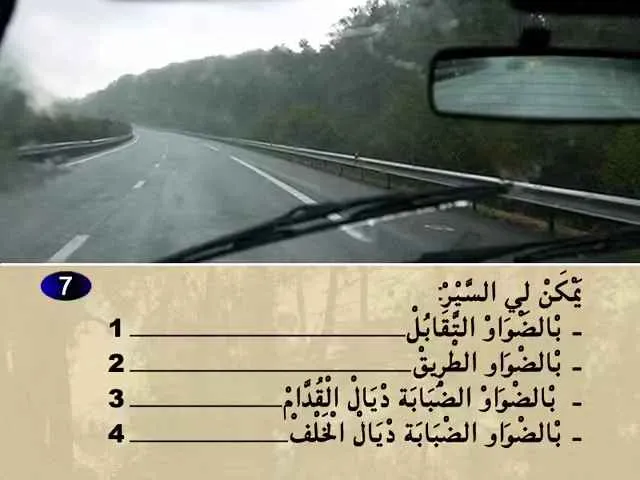
الجواب الصحيح: 1 و 3
فالشتاء يمكنني نسوق ب أضواء التقابل وأضواء الضباب الأمامية.
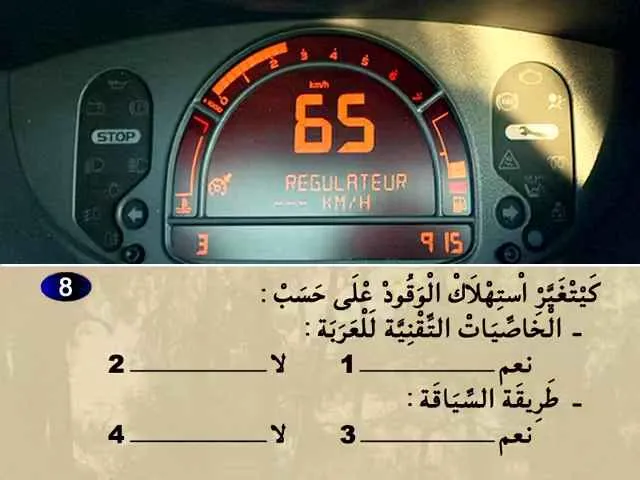
الجواب الصحيح: 1 و 3
كل عربة عندها مميزاتها، استهلاك الوقود كيختلف حسب خصائص العربة وطريقة السياقة ديال السائق.
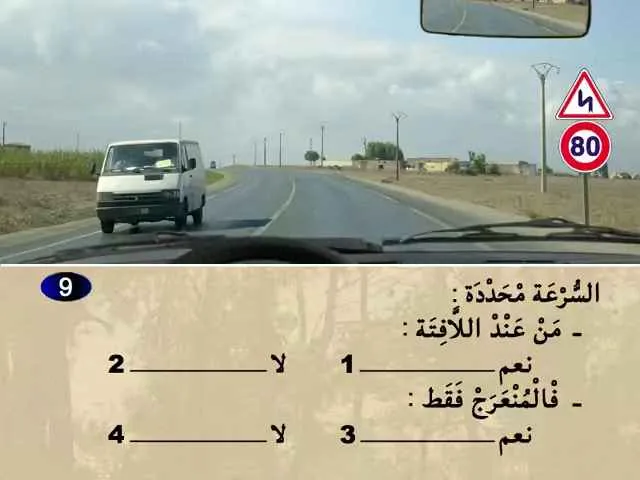
الجواب الصحيح: 1 و 4
علامة المنع كتطبق من عند العلامة ديما، ماشي غير ف المنعرج.
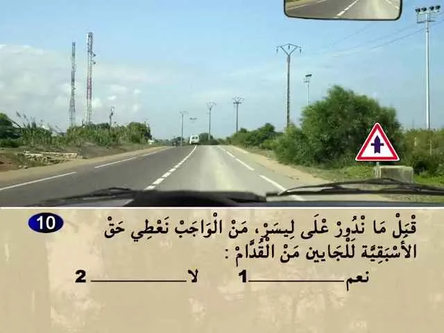
الجواب الصحيح: 1
العلامة الطرقية كتعني عندي حق الأسبقية إلا بغيت نكمل طريق أو ننعطف لليمين، ولكن إلا بغيت ننعطف ليسار، خاصني نعطي الأسبقية للعربات اللي جاية من اليمين.
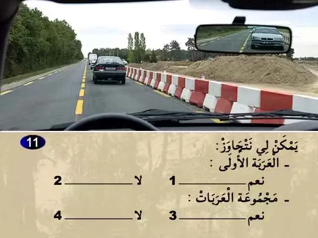
الجواب الصحيح: 2 و 4
فالخط المتقطع لي على اليسار ديالي، المسافة بين الخطوط بدات كتتقلص، هدشي كيعني ان الخط المتصل قريب، ما يمكنش نتجاوز دابا.
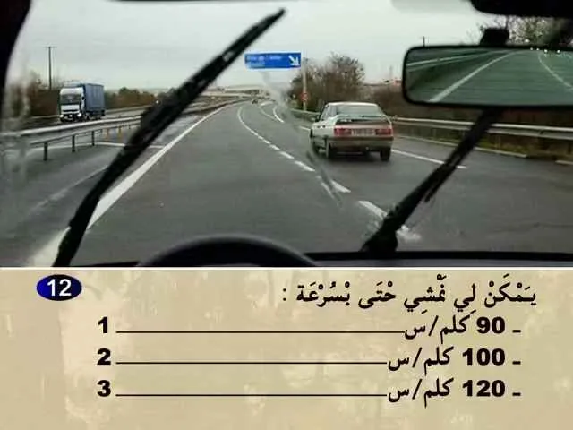
الجواب الصحيح: 2
السرعة القصوى ف طريق سيار هي 120 كلم/س، ولكن ف وجود المطر والمنعرجات كتولي 100 كلم/س.
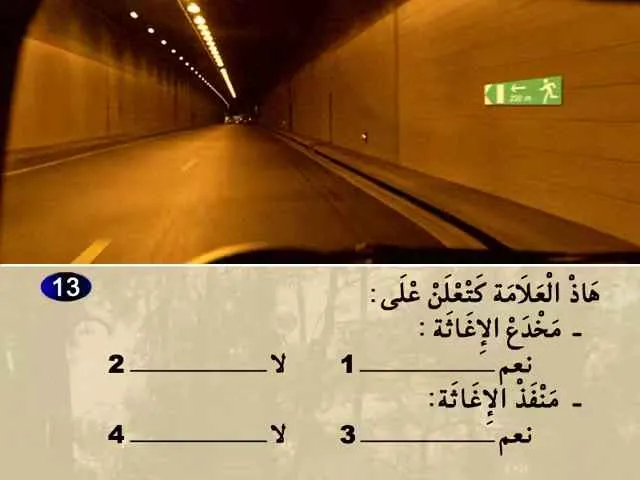
الجواب الصحيح: 2 و 3
العلامة كتعلن عن منفد الإغاثة، ماشي مخدع الإغاثة.
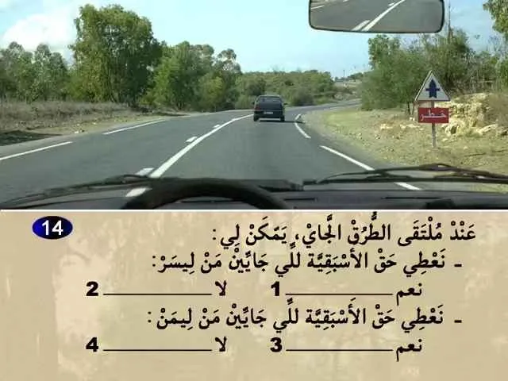
الجواب الصحيح: 2 و 4
اللافتة كتعني عندي حق الأسبقية، ما نعطيش حق الأسبقية للعربات اللي جاية من اليمين ولا اليسار، ف ملتقى الطرق ننتبه ونمر انا اللول.
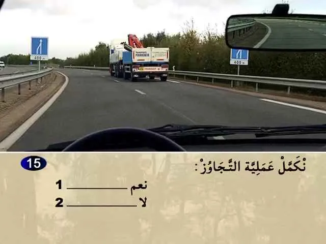
الجواب الصحيح: 1
فطريق سيار، العلامة كتعلن على أن المسلك غادي يتقلص على بعد 400 متر، يمكنني نكمل عملية التجاوز لأنني بديت العملية و المسافة كافية باش نكمل العملية.
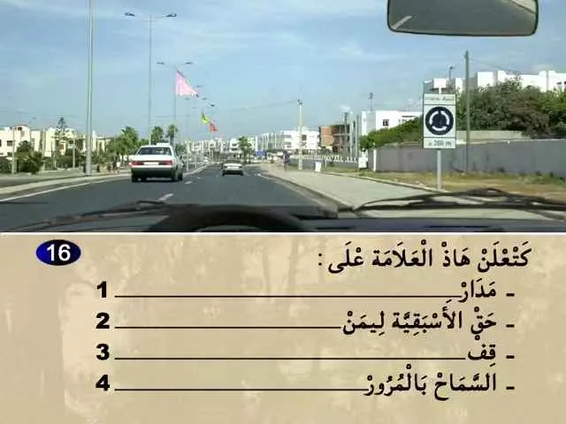
الجواب الصحيح: 1
العلامة الطرقية كتعني مدار (رومبوان).
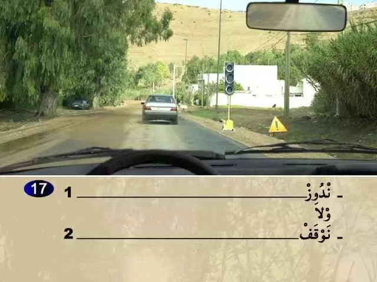
الجواب الصحيح: 1
طريق فيها أشغال والإشارة الضوئية بالضوء الأصفر الرفراف، يعني ننتبه و ندوز، ماكينش شي حاجة كتجبرني نوقف.
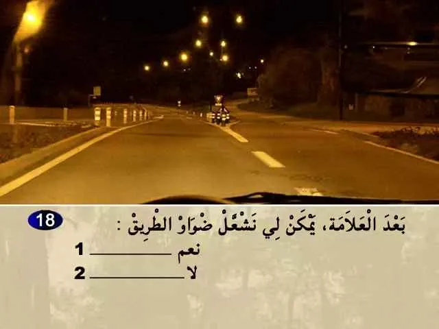
الجواب الصحيح: 2
هاد العلامة كتعني أني غادي ندخل للمدينة، والمدينة عندها الإنارة، ف هاد الحالة نسوق ب أضواء الوضع فقط.
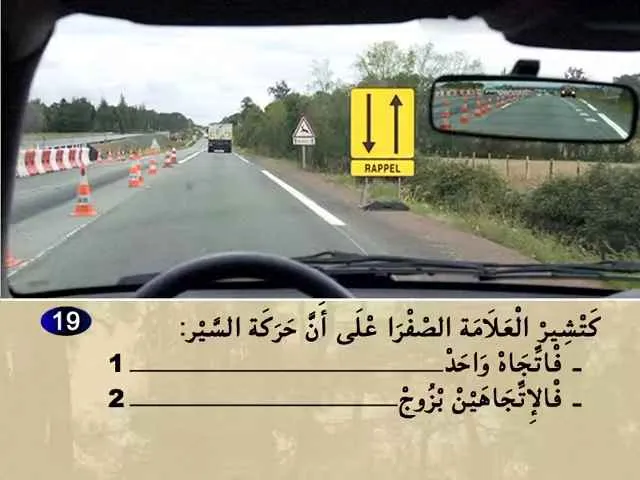
الجواب الصحيح: 2
الإشارة الطرقية الصفراء كتوضح أن الطريق ذات اتجاهين.
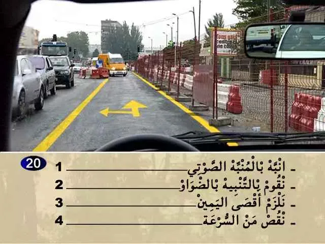
الجواب الصحيح: 3 و 4
فوجود الأشغال، ما خاصنيش ننبه بالمنبه الصوتي ولا بالأضواء، غير نلتزم بأقصى اليمين وننقص السرعة.
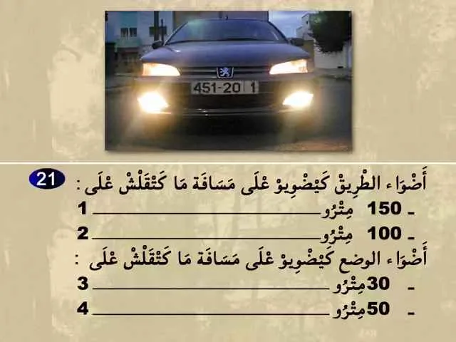
الجواب الصحيح: 2 و 3
أضواء الطريق (الفار) نستعملها خارج التجمعات السكنية وف طريق مظلمة بشرط ماتكونش عربات قدامي ولا ف الاتجاه المعاكس، ونستعملها للتنبيه ف المدينة وخارجها فملتقيات الطرق والمنعرجات وعند التجاوز. أضواء التقابل (الكود) نستعملها تقريبا فجميع الحالات، ف طريق مضوية، فالتجمع السكني ولا خارجه، وعند التقابل مع شخص أو سيارة، فالشتاء، الضباب، العجاج والثلج.
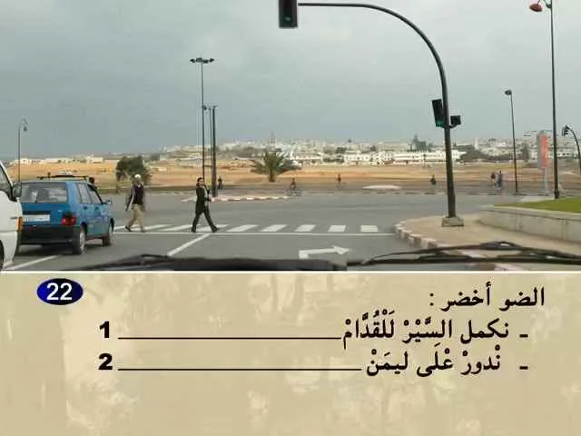
الجواب الصحيح: 2
التّشوير الطّرقي الأفقي السهم لليمين، كيجبّرني ننعطف لليمين.
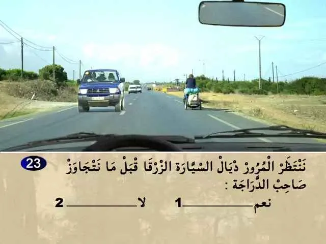
الجواب الصحيح: 1
خاصني ننتظر باش نتمكن من التجاوز، الحالة ما كاتسمحش دابا، ننتظر مرور السيارة الزرقاء ومن بعد نتجاوز صاحب الدراجة.
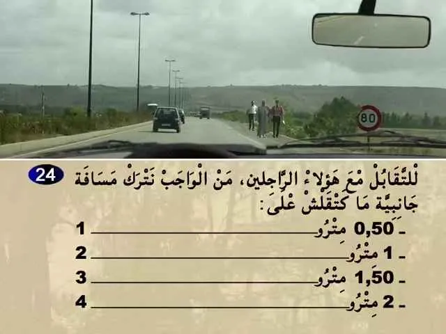
الجواب الصحيح: 4
عند التقابل مع راجلين ولا دراجات، خاصني فخارج المدينة نشغل مؤشر تغيير الاتجاه لليسار وننحاز لمسافة لا تقل عن 2 متر.
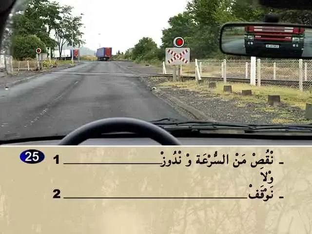
الجواب الصحيح: 2
الضوء أحمر، إذن خاصني نوقف.
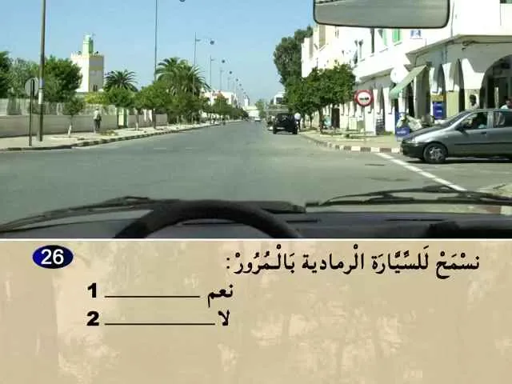
الجواب الصحيح: 2
فملتقى الطرق، الأسبقية للعربات اللي فاليمين، ولكن ف هاد الحالة الخطوط المتقطعة عند السيارة الرمادية كتعني ما عندهاش حق الأسبقية، إذن نمر نا اللول.
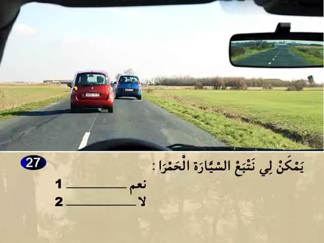
الجواب الصحيح: 2
فطريق ذات اتجاهين، ما يمكنش نتبع سيارة كتقوم بعملية التجاوز.
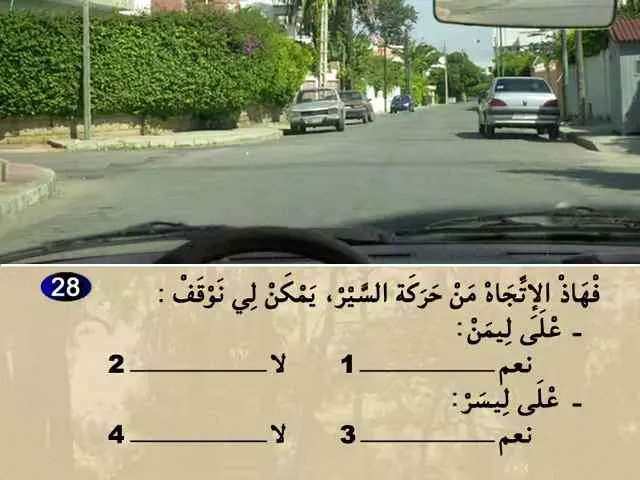
الجواب الصحيح: 1 و 4
فطريق ذات اتجاهين، يمكنني نوقف فقط ف الجهة اليمنى.
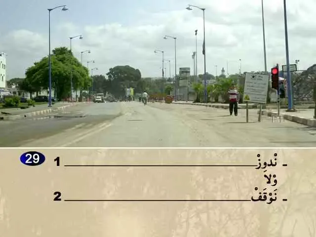
الجواب الصحيح: 2
كاينة إشارة ضوئية حمراء كتجبرني نوقف.
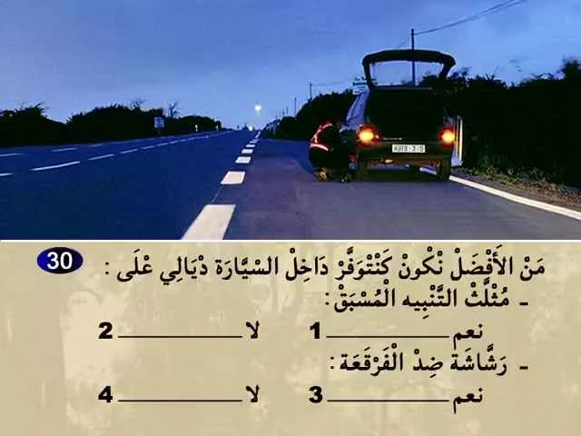
الجواب الصحيح: 1 و 3
مثلث التنبيه المسبق خاص يكون ف السيارة فحالة وقوع عطب، ورشاش ضد الفرقعة والسترة الصفراء حتى هوما.
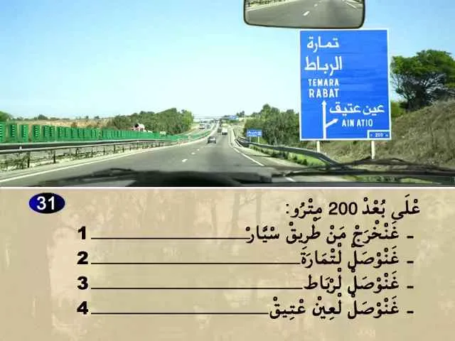
الجواب الصحيح: 1
على بعد 200 متر كاين المخرج لعين عتيق لي هي مدينة او مجمع سكني، إذن غادي نخرج من الطريق السيار.
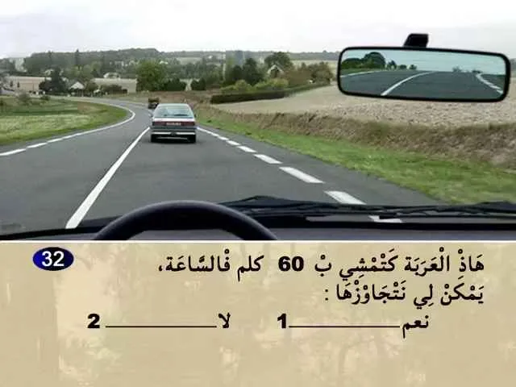
الجواب الصحيح: 2
التّشوير الطرقي الأفقي الخط المتصل كيمنعني من التجاوز.
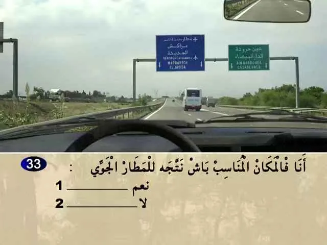
الجواب الصحيح: 1
العلامة الزرقاء كترشدني أنني فالمكان المناسب للسير مباشرة للمطار.
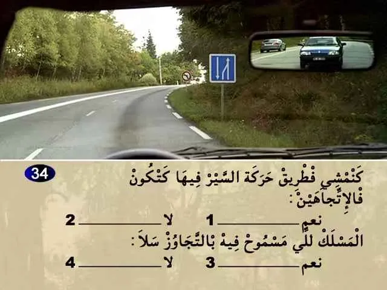
الجواب الصحيح: 1 و 3
أنا دابا ف طريق ذات اتجاهين والعلامة الطّرقية كتوضع أن مسلك التجاوز غادي يسالي قريب.
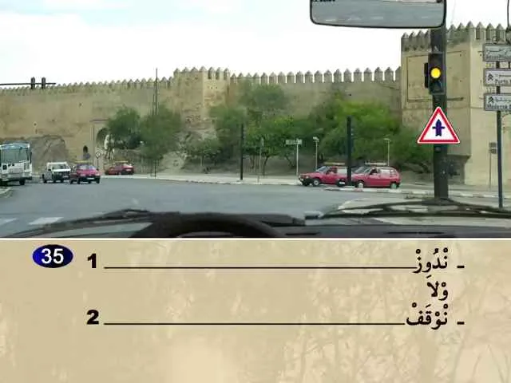
الجواب الصحيح: 2
الضوء برتقالي، خاصني نستعد للوقوف لأنه غادي يتبدل للأحمر بعض لحظات.
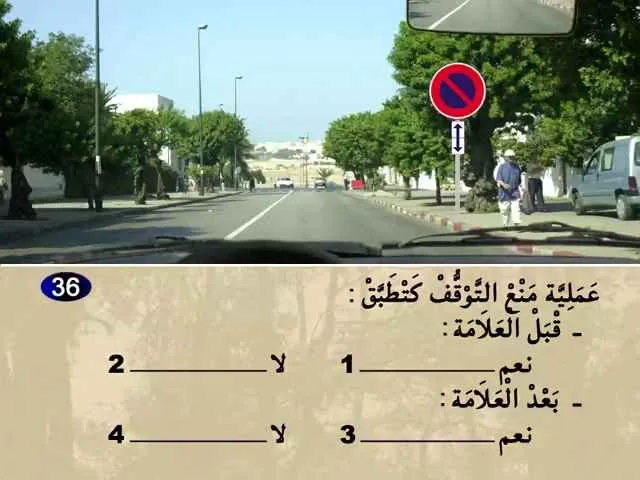
الجواب الصحيح: 1 و 3
العلامة الطرقية كتعني المنع من التّوقف، وعلامة تكميلية بأسهم على الامتداد، إذن ما يمكنش نتوقف لا قبل ولا بعد العلامة.
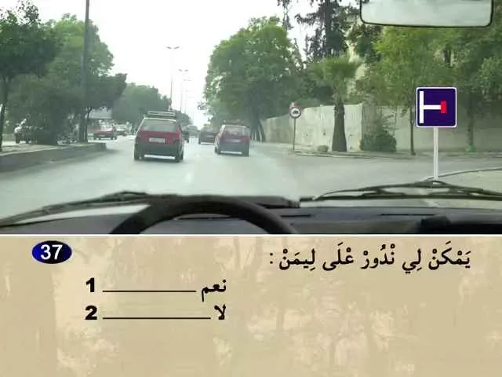
الجواب الصحيح: 1
العلامة الطّرقية كتعلم أن الطريق مسدودة، ما كتمنعش المرور، يمكنني نمر على اليمين.
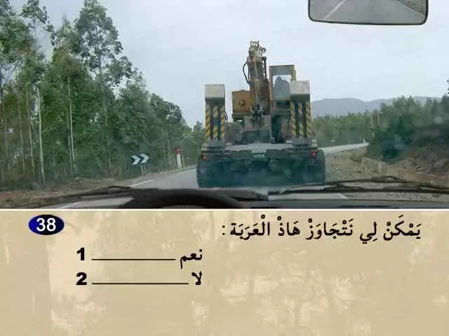
الجواب الصحيح: 2
الرؤية غير واضحة، كاين منعرج، والعربة كتصعب عليا الرؤية، هاد الأسباب كتمنعني من التّجاوز.
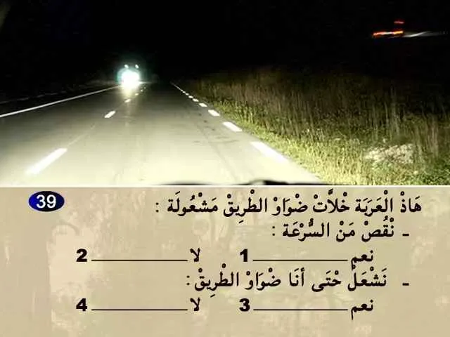
الجواب الصحيح: 1 و 4
خاصني نلتزم بأقصى اليمين وننقص السرعة، و مانشغلش أضواء الطريق حتى نكمل عملية التقابل.
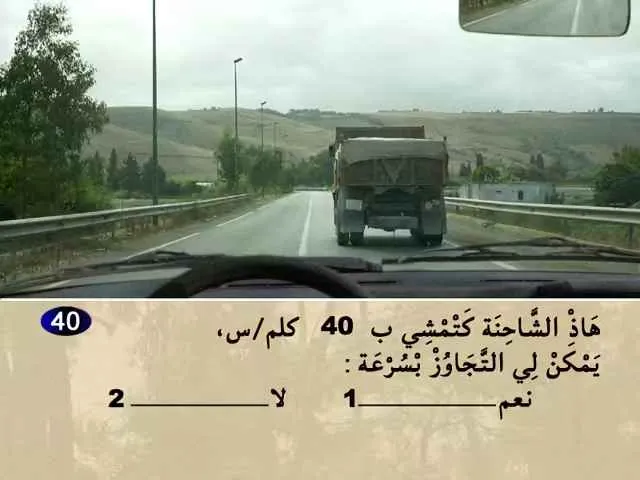
الجواب الصحيح: 2
التّشوير الطرقي الأفقي الخط المتصل كيمنعني من التجاوز.